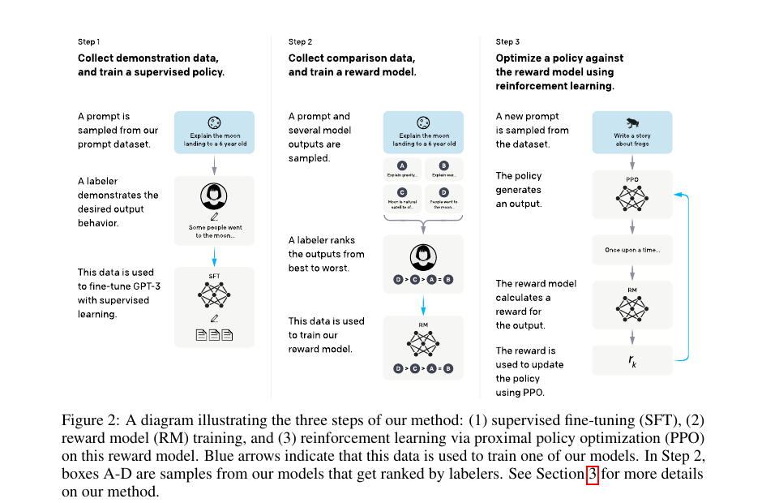
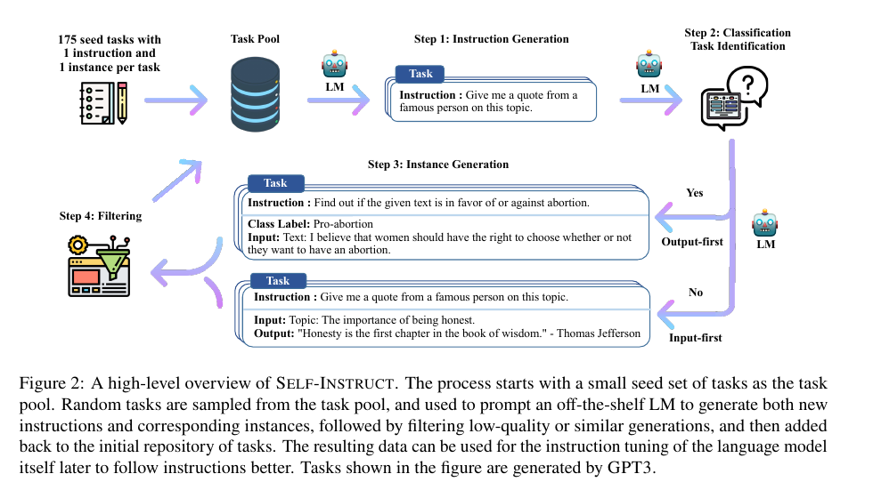
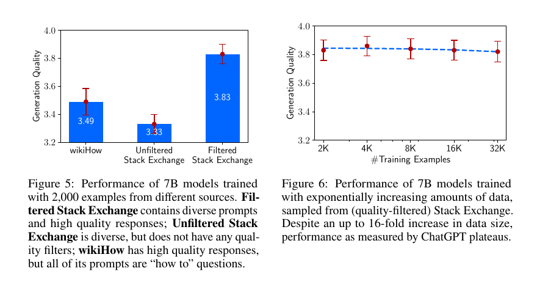
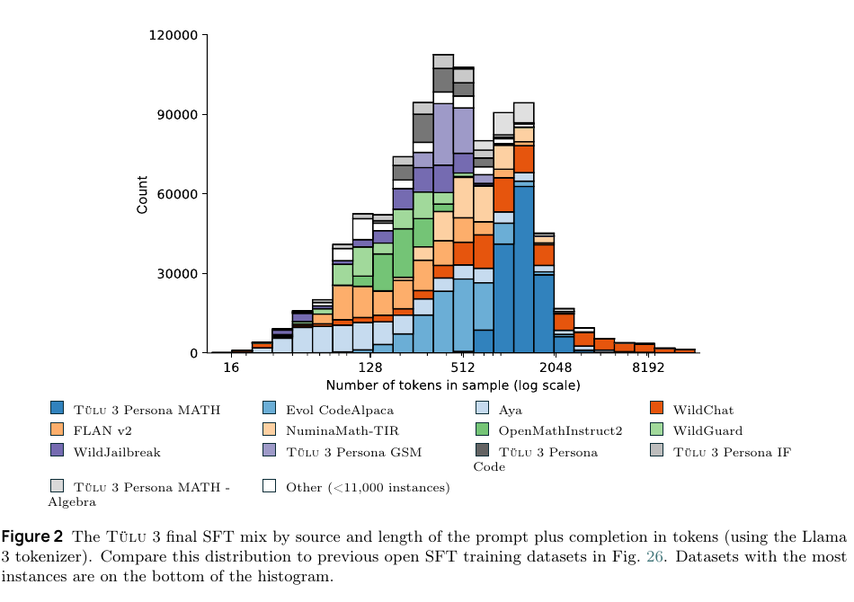
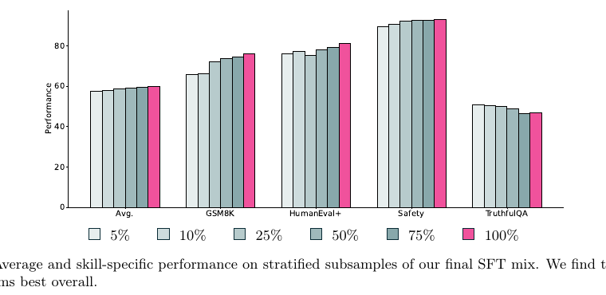
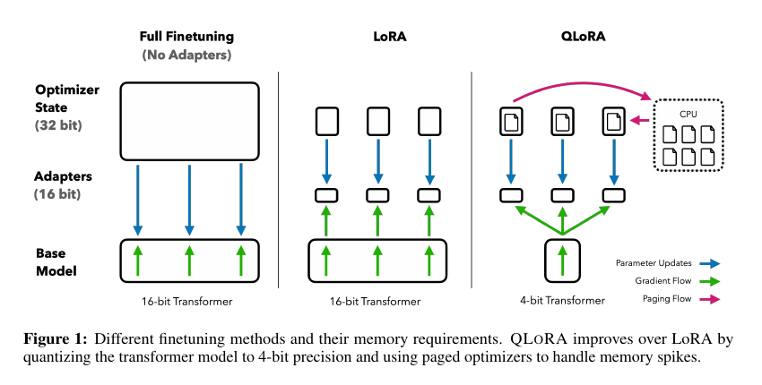
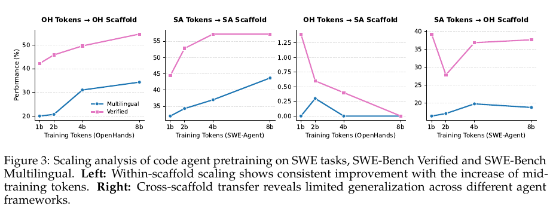

先给结论：SFT 训练“行为接口”，不是把全部业务事实塞进参数
SFT 的本质是让预训练模型在给定上下文下复现高质量目标行为。对电信 Agent，这个“行为”应主要包括：识别流程阶段、选择工具、生成合法参数、根据观察继续决策、给出证据、在风险边界处停止或升级人工。
最重要的六条工程判断
- 动态事实外置。协议版本、KPI 实时值、配置和拓扑继续由知识图谱、检索与工具提供；SFT 训练“何时查、查什么、如何核验”。
- 样本不是问答文本，而是可审计决策记录。至少应含状态、动作、观察、终止条件、验证器结果和证据来源。
- 正常流程不够。必须加入超时、工具失败、信息缺失、权限不足、异常分支、回滚和升级人工，否则模型只会复述理想路径。
- 合成数据必须被验证。Self-Instruct、Kimi K2、DeepSeek-V3.2 等路线共同指向“生成—执行—过滤”，而不是直接把模型生成内容回灌。
- 脚手架与工具格式也是分布。Qwen3-Coder-Next 的公开实验显示，同一 Agent scaffold 内扩容有效，但跨 scaffold 迁移有限；训练应覆盖多种工具定义与调用模板。
- SFT 先建立稳定行为，RL 再优化长期策略。若任务只需复现已知正确流程，SFT 足够；若需要在新状态中进行多步权衡、恢复和成本优化，才进入可验证环境 RL。
SFT 在后训练体系中的位置
“把知识训练进模型”常混合了五类不同目标。先分清目标，才能选择数据和训练方法。
| 方法 | 主要学习对象 | 典型数据 | 是否适合动态电信事实 | 主要风险 |
|---|---|---|---|---|
| 持续预训练 / CPT | 领域语言、统计规律、基础表征 | 协议、手册、工单、日志的无标注语料 | 低；更新成本高 | 事实陈旧、版权、遗忘 |
| SFT | 回答方式、流程、工具调用、格式与专家操作模式 | 输入→目标输出；多轮轨迹 | 中；应训练查询行为而非记住数值 | 模仿错误、分布偏置、过拟合模板 |
| 偏好优化 | 两个可接受行为之间的排序偏好 | chosen / rejected | 中 | 偏好标注漂移、reward hacking |
| 环境 RL | 长期决策策略、探索、恢复与成本权衡 | 可交互环境、动作、奖励、verifier | 高；环境可实时给状态 | 奖励投机、训练不稳定、安全 |
| KG / RAG / 工具 | 外部可更新事实和证据 | 本体、文档、数据库、指标、告警 | 高 | 检索缺失、权限、证据冲突 |

目标函数、loss mask 与多轮轨迹
标准 SFT 是教师强制的最大似然训练。真正决定模型学到什么的，不只是文本内容，还包括 chat template、角色边界、监督掩码和样本归一化方式。
3.1 带掩码的通用 SFT 目标
在指令和完成文本的经典设置中，只对 completion token 计算损失是常见做法。Self-Instruct 明确将 prompt loss 权重设为 0；QLoRA 的一组消融也显示 target-only loss 优于 source+target loss，但这不是所有任务的普遍定律。[5][11]
GLM-5 报告公开了一种值得借鉴的处理：保留错误动作及其环境反馈，让模型看到“错误—反馈—恢复”的上下文，但对错误动作 token 屏蔽损失，只监督修正动作。这样既保留恢复经验，又避免把错误动作当成模仿目标。[22]
3.2 token 平均与样本平均不是一回事
按 token 平均
长样本贡献更大。适合把所有目标 token 当作同等训练单位，但长轨迹可能支配梯度。
3.3 推荐的轨迹样本最小结构
{
"id": "ims-reg-auth-uaa-timeout-000147",
"scenario": "IMS_INITIAL_REGISTRATION",
"split_keys": {
"fault_family": "DIAMETER_UAA_TIMEOUT",
"topology": "dual-site",
"vendor_family": "held_out"
},
"messages": [
{"role": "system", "content": "只读诊断；高风险动作必须升级人工。"},
{"role": "user", "content": "IMS 注册成功率下降，请定位。"},
{"role": "assistant", "tool_call": {
"name": "query_kpi",
"arguments": {"kpi": "ims_registration_success_rate", "window": "15m"}
}, "train": true},
{"role": "tool", "content": {
"value": 0.71, "baseline": 0.985, "scope": "site-a"
}, "train": false},
{"role": "assistant", "tool_call": {
"name": "get_diameter_trace",
"arguments": {"interface": "Cx", "message_pair": "UAR/UAA"}
}, "train": true},
{"role": "tool", "content": {
"result": "UAR sent; UAA timeout; peer_unreachable=true"
}, "train": false},
{"role": "assistant", "content": {
"diagnosis": "Cx 路径或 HSS 对等体不可达",
"evidence_ids": ["obs:kpi:147", "obs:trace:882", "spec:29.229:clause-x"],
"next_action": "检查 Diameter peer 状态；不自动重启网元",
"escalate": true
}, "train": true}
],
"verifier": {
"task_success": true,
"tool_schema_valid": true,
"evidence_complete": true,
"unsafe_action_count": 0
}
}
数据工程：质量、覆盖、配比、验证、去污染
公开研究并不支持“只要把样本数堆大就会稳定变好”。LIMA 强调质量与多样性，FLAN 系列强调任务混合和模板覆盖，Tülu 3 展示了现代 SFT 数据混合、去污染和消融流程。


4.1 一条数据从来源到可训练样本的完整链路
4.2 数据源选择
| 来源 | 优势 | 主要缺陷 | 进入训练集前的处理 |
|---|---|---|---|
| 专家演示 / 黄金 SOP | 高精度、符合组织安全边界 | 数量少、风格单一、可能只覆盖理想流程 | 增加异常分支；交叉专家复核；保留依据 |
| 真实工单与操作日志 | 接近真实分布和长尾 | 噪声、缺步骤、事后叙述、隐私 | 脱敏；重建时间线；结果核验；去近重复 |
| 协议 / 手册生成样本 | 可覆盖正式定义和边界条件 | 容易变成“背条款”，缺环境反馈 | 转成可执行情境；绑定条款和版本 |
| 教师模型蒸馏 | 扩展快、可生成多样表达 | 继承幻觉、风格和能力上限 | 多教师 / 多采样；执行验证；拒绝采样 |
| 仿真器 / 数字孪生 | 可系统注入故障和边界条件 | sim-to-real gap | 校准真实分布；保留环境版本与种子 |
4.3 分桶采样比全局随机采样更重要
建议至少按以下维度建立可观察的数据配比：任务能力、网络域、流程阶段、故障族、复杂度、轨迹长度、工具类型、成功/失败、是否升级人工、安全等级、证据完整度。高频“查 KPI—输出一句话”样本若不设上限，会淹没稀有但关键的跨域故障和恢复流程。


4.4 切分与去污染
错误做法
- 随机切分同一工单的改写版本。
- 训练和测试共享同一拓扑、同一根因模板。
- 先生成评测，再用全量语料做近重复合成。
- 只做字符串去重，不检查语义等价流程。
推荐切分键
- 故障族 / 根因族；
- 站点或拓扑形态；
- 网元厂商族或软件版本；
- 协议版本与可选特性；
- 时间窗口和来源工单簇。
对于目标能力选择，LESS 使用少量目标任务梯度，从通用指令数据中选择更有影响的子集；这类方法可用于“以少量电信故障样本引导通用语料筛选”，但仍需在目标场景上独立验证。[8]
训练工程：全量微调、LoRA、QLoRA 与稳定性
训练方法的选择首先由模型许可、硬件、序列长度、数据规模和部署策略决定。LoRA/QLoRA 解决资源问题，但不会自动解决数据错误、灾难性遗忘或能力覆盖不足。

| 方案 | 训练参数 | 资源特征 | 适合场景 | 注意事项 |
|---|---|---|---|---|
| Full fine-tuning | 更新全部或大部分权重 | 显存、通信和 checkpoint 成本最高 | 数据充分、追求极致能力或要合并到单一基座 | 遗忘与分布偏移风险更大；需完善回归评测 |
| LoRA | 冻结基座，训练低秩 A/B | 显著减少可训练参数；可模块化管理 | 领域适配、多个技能 adapter、快速迭代 | rank、target modules 和合并策略需消融 |
| QLoRA | 4-bit 基座 + LoRA adapter | 进一步降低显存门槛 | 单机/少卡原型、较大模型的经济型 SFT | 量化、paged optimizer、内核和长序列会影响稳定性 |
| 部分层微调 | 仅更新特定层/模块 | 介于 full 与 PEFT 之间 | 有明确模块假设或部署约束 | 未必优于 LoRA；需要严谨对照 |
5.1 起始超参数：用于搜索，不是固定答案
| 参数 | 保守起始区间 | 应观察的信号 |
|---|---|---|
| Epoch | 1–2；小型高质量集可探索 3 | 验证任务成功率、复述/风格过拟合、通用能力回退 |
| 学习率 | Full FT 常从 5e−6–2e−5；LoRA 常从 1e−5–2e−4 搜索 | 训练损失下降速度、梯度范数、早期验证峰值 |
| Warmup | 总步数的 3%–10% | 起始 loss spike、混合精度溢出 |
| 有效 batch | 优先按“目标 token / step”记录 | 不同长度 mix 下梯度权重是否改变 |
| 最大长度 | 覆盖真实轨迹的高分位；保留截断率报告 | 截断是否集中在结论、证据或长工具返回 |
| LoRA rank | 8 / 16 / 32 / 64 做小网格 | 目标能力、遗忘、adapter 大小与推理成本 |
这些区间只是实验入口。模型规模、架构、数据质量、训练 token、序列长度和优化器都会改变最优值。最终选择必须以 held-out 流程成功率与回归测试为准，不能直接照搬单篇论文。
5.2 Packing 必须同时处理三件事
Attention 隔离
不同样本之间使用 block-diagonal attention，防止跨样本“看见答案”。
Position 处理
按实现重置或正确编码子序列 position IDs，避免位置漂移。
Loss 边界
每个样本分别建立 prompt/response mask，不能因拼接而监督错误 token。
《Efficient Sequence Packing without Cross-contamination》给出了打包与未打包计算等价所需的隔离条件；论文在特定 BERT 设置中的吞吐收益不能直接当作所有 LLM SFT 的保证。[12]
5.3 遗忘、泄露与训练监控
- 同时记录领域集与通用能力集，避免“电信分数上升”掩盖语言、推理或安全能力下降。
- 保留基座、每个 checkpoint、optimizer 和完整配置；验证峰值不一定出现在最后一步。
- 监控每个能力桶的 token 占比、梯度贡献、截断率和 loss；只看全局 loss 不够。
- 对模型输出做近重复检测，识别背诵工单、模板或评测答案。
- LoRA/PEFT 也会遗忘；参数少不等于旧能力不受影响。[13]
5.4 可复现的开源实现栈
| 层次 | 开源项目 | 主要用途 | 选型提醒 |
|---|---|---|---|
| 训练 API | Hugging Face TRL | SFTTrainer、偏好优化与 RL 训练接口 | 核对 response template、packing 和 loss mask 实现 |
| 参数高效 | PEFT · bitsandbytes | LoRA/adapter 与低比特训练 | 核对模型架构支持、target modules 和量化内核 |
| 训练编排 | LLaMA-Factory · Axolotl · ms-swift | 配置化数据处理、分布式训练和评测 | 先做小样本 mask/模板单元测试，再跑全量 |
| Agent RL | OpenRLHF · slime | SFT 后的可验证环境策略优化 | RL 属于下一阶段；先完成 verifier 与沙箱 |
从“回答样本”升级为“可执行轨迹”
Agent SFT 的训练单位不是一句答案，而是模型在环境中的一段可复现交互。每条轨迹应能回答：初始状态是什么、模型看到了什么、调用了什么、环境如何变化、何时终止、结果如何验证。
6.1 轨迹的六个必要元素
状态 State
任务目标、已知上下文、拓扑、权限、历史动作和剩余预算。
动作 Action
回答、工具调用、参数、查询、停止或升级人工。
观察 Observation
工具返回、错误码、环境变化、执行日志，不作为目标 token 模仿。
约束 Constraint
工具 schema、步骤前置条件、禁止动作、审批边界。
终止 Termination
成功、失败、信息不足、预算耗尽或必须转人工。
验证 Verifier
结果状态、关键检查点、证据完整度、成本与安全规则。


6.2 四家公开技术路线的共同结构
| 报告 | 轨迹/环境构造 | SFT 关键点 | SFT 后续 | 公开边界 |
|---|---|---|---|---|
| Kimi K2[21] | 真实 + 合成工具 → Agent → rubric 任务 → 用户/工具模拟 → judge 过滤 | 只保留满足成功标准的多轮工具轨迹，相当于大规模拒绝采样 | 可验证奖励、自评 rubric、token budget、PTX loss | 公开报告与权重；未完整公开生产数据合成系统 |
| DeepSeek-V3.2[20] | 数据库 → 工具 → 任务 → 标准解 → verifier → 逐级加难 | 用推理数据与非推理 Agent 数据冷启动“思考中调用工具” | 专域专家蒸馏 + 统一 mixed GRPO | 报告公开 1,827 个通用环境、4,417 个任务；完整环境未开源 |
| Qwen3-Coder-Next[19] | 真实 PR/合成缺陷 → Docker → 验证脚本 → 多 scaffold rollout | 执行验证轨迹；过滤失败、无终止与畸形 tool call；覆盖多工具模板 | 多轮 RL、专家蒸馏 | 报告称约 800k 可验证任务；MegaFlow 等基础设施未完整开源 |
| GLM-5[22] | 大量真实、长程、可执行环境轨迹和 10k+ 可验证场景 | 错误动作保留但 loss mask；统一 message-list 轨迹格式 | Reasoning RL → Agentic RL → General RL → 跨阶段蒸馏 | 公开报告、权重与 slime；完整数据/环境仍不公开 |



6.3 什么情况下 SFT 足够，什么情况下必须进入 RL
SFT 足够或优先
- 存在明确、稳定、可重复的专家示范；
- 工具 schema 和步骤约束确定；
- 主要目标是格式、调用习惯、流程复现；
- 高风险动作必须人工审批，模型只提供建议；
- 没有可靠的环境或 verifier。
需要环境 RL
- 终局成功比单步模仿更重要；
- 需要在新状态中探索、恢复和重规划；
- 工具有成本、时延和失败概率；
- 存在多个可行路径，要优化长期收益；
- 结果可自动验证，并有安全沙箱。
如何把某类电信业务流程训练成模型能力
本体图谱提供“对象、关系、流程与证据”；SFT 数据把这些结构映射为“在某个状态下应执行什么行为”。二者不是替代关系，而是训练数据生成和在线执行的上下游。
7.1 从现有电信本体到训练环境
| 本体 / 图谱元素 | 训练对象中的映射 | 运行时作用 |
|---|---|---|
Procedure / ProcedureVariant | 场景定义、正常路径、故障变体 | 任务采样与流程版本选择 |
Step / ProcedureStep | 候选动作、前置条件、检查点 | 约束合法下一步 |
FlowEdge / Condition | 分支、guard、重试、失败与升级 | 环境状态转移与 verifier |
MessageExchange | SIP/Diameter/NGAP 等消息动作与观察 | 检查接口、方向、消息顺序和响应码 |
| 网元 / 接口 / KPI / KQI | 工具参数、观测字段、诊断证据 | 连接实时 OSS、日志、PM 和拓扑 |
EvidenceSpan 等证据对象 | provenance[] 与 evidence_ids[] | 生成结论的条款级溯源与版本控制 |
当前项目中的流程建模入口可参考 ontology/core.ttl；IMS 初始注册实例和 KPI 可参考 catalog/30-ims-service.json。现有 IMS 注册路径可直接作为“正常轨迹骨架”，但若要训练 Agent，还需要补齐失败分支、guard、环境状态、工具返回和可执行 verifier。
7.2 具体案例：IMS 注册失败诊断
目标不是让模型背诵 11 步理想注册，而是让它在不同观测下定位故障、选择最少必要工具、给出证据，并在需要变更网络时停止自动执行。
可观测状态
- IMS 注册成功率及站点/区域基线；
- SIP REGISTER / 401 / 200 消息链；
- Cx UAR/UAA、MAR/MAA、SAR/SAA；
- P-CSCF、I-CSCF、S-CSCF、HSS/UDM 告警；
- Diameter peer、DNS、路由、证书、配置差异；
- 变更窗口与历史工单。
允许工具
query_kpi/query_alarm；get_sip_trace/get_diameter_trace；query_topology/compare_config；query_kg_evidence；run_readonly_check；escalate_to_human。
7.3 训练集应覆盖的变体矩阵
| 阶段 | 正常 | 异常/长尾 | 工具/环境故障 | 安全边界 |
|---|---|---|---|---|
| 接入与发现 | UE 获得 P-CSCF 并发送 REGISTER | DNS/NAPTR/SRV 错误、P-CSCF 不可达 | 拓扑查询超时、数据陈旧 | 不得自动改 APN/路由 |
| 首次 REGISTER | 经 P/I-CSCF 到达归属域 | 403、404、408、路由环路 | SIP 解码失败、抓包缺段 | 证据不足时不得断言根因 |
| Cx 鉴权 | UAR/UAA、MAR/MAA 正常 | Diameter peer down、超时、用户未知 | HSS 数据只读接口拒绝 | 不得修改用户数据 |
| 鉴权后注册 | SAR/SAA 后返回 200 OK | AKA 失败、同步失败、S-CSCF 状态异常 | 配置对比工具部分失败 | 重启/切换必须审批 |
| 验证与结束 | KPI 和抽样注册恢复 | 局部恢复、复发、跨站点扩散 | 验证器不确定 | 不确定或高影响则升级人工 |
7.4 电信训练样本的证据字段
规范证据
standard_family、edition、clause、evidence_span、文档哈希。
观测证据
KPI/告警/信令/配置/拓扑的查询 ID、窗口、范围、采集时间和数据质量。
训练证据
轨迹生成器、教师模型、prompt 版本、环境版本、随机种子、verifier 版本与结果。
评测：先确定性检查，再看结果，再让人审高风险样本
只用 BLEU、ROUGE 或总体 loss 无法评价 Agent。评测应从“输出像不像”转向“动作是否合法、过程是否可执行、结果是否正确、证据是否充分、是否守住安全边界”。
| 层级 | 指标 | 判定方式 | 典型失败 |
|---|---|---|---|
| 格式 | tool-call schema valid、JSON 可解析、必填字段 | 确定性 checker | 参数名错、枚举非法、自然语言混入 JSON |
| 动作 | 合法动作率、无效调用率、重复调用率 | 工具注册表 + 状态机 | 调用不存在工具、参数越权、死循环 |
| 流程 | 关键检查点覆盖、顺序约束、分支正确率 | 本体流程 / verifier | 跳过前置条件、在错误状态执行动作 |
| 结果 | 任务成功率、根因 Top-k、恢复成功率 | 环境终态 / 专家金标 | 过程看似合理但未解决任务 |
| 证据 | 引用完整率、证据蕴含、版本一致性 | 证据 ID + 规则 + 人工抽检 | 条款不支持结论、引用过期版本 |
| 效率 | 工具次数、token、时延、关键路径步骤 | 轨迹日志 | 过度查询、成本高、长链无收益 |
| 安全 | 越权动作、审批绕过、应升级未升级 | 红线规则 + 对抗测试 | 擅自重启、修改生产配置、泄露用户数据 |
| 泛化 | 新拓扑、新故障组合、新工具模板 | 按 split key 的 OOD 套件 | 只会训练模板、跨 scaffold 失效 |
8.1 推荐评测顺序
- 确定性 checker：格式、schema、枚举、顺序、禁止动作。IFEval 证明了可验证指令约束的价值；电信场景可把 checker 扩展到工具与流程。[14]
- 环境执行：工具是否能真实运行，终态是否满足成功条件。
- 规则与结果模型：对证据覆盖、根因、恢复质量和 rubric 打分。
- LLM-as-a-Judge：仅用于难以规则化的质量维度；交换答案顺序，缓解位置偏差。[15]
- 专家复核：高风险、证据冲突、模型不确定和发布前抽样。
8.2 上线门禁
Gate 1 · 数据
许可、脱敏、去重、去污染、证据覆盖、split 冻结。
Gate 2 · 离线
领域成功率、OOD、工具合法率、通用能力回归。
Gate 3 · 沙箱
异常恢复、工具失败、长轨迹、成本与 reward hacking。
Gate 4 · 影子
只读观察真实流量，不影响网络；与专家决策对比。
Gate 5 · 半闭环
只执行低风险动作；其他动作必须人工审批。
Gate 6 · 受限闭环
最小权限、回滚、审计、速率限制、实时停止开关。
建议实施路线：从一个场景做成可验证闭环
先选择边界清晰、结果可验证、风险可控的业务场景。IMS 注册失败诊断比“全网自治运维”更适合首个试点，因为消息链、网元角色、KPI 和失败状态相对可定义。
| 阶段 | 交付物 | 建议的首期规模 | 退出条件 |
|---|---|---|---|
| 0. 任务规格 | 状态、工具、权限、成功/失败终态、禁止动作、指标 | 1 个主场景，10–30 个根因/变体 | 专家能在同一环境中一致判定成功 |
| 1. 黄金数据 | 专家演示、真实工单重建、证据链、dataset card | 500–2,000 条高质量轨迹 | 关键路径与异常分支覆盖达标 |
| 2. 合成扩展 | 用户模拟、工具模拟、故障注入、多模板轨迹 | 5,000–50,000 条验证后轨迹 | verifier 通过且分桶分布可解释 |
| 3. SFT | 基线、LoRA/QLoRA/full 对照、checkpoint、回归报告 | 先小模型/小数据消融，再扩容 | 工具合法率、流程成功率和通用回归达标 |
| 4. 环境 RL | 只对有 verifier 的难例做策略优化 | 从高价值长程场景开始 | 相对 SFT 的 OOD/恢复增益稳定且无投机 |
| 5. 生产验证 | 影子→半闭环→受限闭环 | 逐站点/逐动作授权 | 安全、审计、回滚与人工接管全部通过 |
首期实验矩阵
数据消融
- 黄金数据 only；
- 黄金 + 验证后合成；
- 移除失败恢复轨迹；
- 单工具模板 vs 多工具模板；
- 均匀采样 vs 能力桶配比。
训练消融
- Full / LoRA / QLoRA；
- target-only vs 全文本监督；
- 按 token vs 按样本归一化；
- 1 / 2 / 3 epochs；
- 无 packing vs 正确隔离 packing。
结论
SFT 是把基础模型转成“可用助手 / 可控 Agent”的关键第一步，但高质量 SFT 不是把领域文档转换成问答后直接训练。完整工程至少包括：任务边界、数据结构、证据、验证器、损失掩码、数据配比、去污染、训练消融和多层评测。
对电信运维，最稳妥的架构是：
＋ 用 SFT 学习流程、工具、证据与安全行为
＋ 用可验证环境 RL 学习长程策略和恢复
若以 IMS 注册失败诊断为首个场景，现有本体已经能提供网元、消息、步骤和 KPI 的骨架；下一步的关键不是继续堆更多类，而是把分支条件、状态转移、失败恢复、工具接口、证据和 verifier 实例化，形成可执行的训练与评测环境。
一手论文与技术报告
下列来源均为论文、作者技术报告、官方项目或正式论文页面。报告正文不依赖二手媒体结论。
- Wei et al., “Finetuned Language Models Are Zero-Shot Learners,” ICLR 2022. arXiv
- Sanh et al., “Multitask Prompted Training Enables Zero-Shot Task Generalization,” ICLR 2022. arXiv
- Longpre et al., “The Flan Collection: Designing Data and Methods for Effective Instruction Tuning,” ICML 2023. arXiv
- Ouyang et al., “Training Language Models to Follow Instructions with Human Feedback,” NeurIPS 2022. arXiv
- Wang et al., “Self-Instruct: Aligning Language Models with Self-Generated Instructions,” ACL 2023. arXiv
- Zhou et al., “LIMA: Less Is More for Alignment,” NeurIPS 2023. arXiv
- Chen et al., “AlpaGasus: Training A Better Alpaca with Fewer Data,” ICLR 2024. arXiv
- Xia et al., “LESS: Selecting Influential Data for Targeted Instruction Tuning,” ICML 2024. PMLR
- Lambert et al., “Tülu 3: Pushing Frontiers in Open Language Model Post-Training,” 2024. arXiv · Ai2 技术博客
- Hu et al., “LoRA: Low-Rank Adaptation of Large Language Models,” ICLR 2022. arXiv
- Dettmers et al., “QLoRA: Efficient Finetuning of Quantized LLMs,” NeurIPS 2023. arXiv
- Krell et al., “Efficient Sequence Packing without Cross-contamination,” 2021. arXiv
- Kalajdzievski, “Scaling Laws for Forgetting When Fine-Tuning Large Language Models,” 2024. arXiv
- Zhou et al., “Instruction-Following Evaluation for Large Language Models,” 2023. arXiv · 代码
- Zheng et al., “Judging LLM-as-a-Judge with MT-Bench and Chatbot Arena,” NeurIPS 2023 Datasets and Benchmarks. arXiv
- “SFT Memorizes, RL Generalizes: A Comparative Study of Foundation Model Post-training.” 2025. arXiv
- “Debunking the Myth of SFT Generalization.” 2025. arXiv
- “Rethinking Generalization in Reasoning SFT.” 2026. arXiv
- Qwen Team, “Qwen3-Coder-Next Technical Report,” 2026. HTML · arXiv
- DeepSeek-AI, “DeepSeek-V3.2 Technical Report,” 2025. HTML · arXiv
- Moonshot AI, “Kimi K2: Open Agentic Intelligence,” 2025. HTML · arXiv
- GLM Team, “GLM-5: from Vibe Coding to Agentic Engineering,” 2026. HTML · arXiv
- DeepSeek-AI, “DeepSeek-R1: Incentivizing Reasoning Capability in LLMs via Reinforcement Learning,” 2025. arXiv
- Moonshot AI, “Kimi K2.5 Technical Report,” 2026. HTML · arXiv
证据溯源与图表复用说明
- 每张论文原图均在图注中列出论文、作者、年份、Figure 编号、PDF 页码和原文链接。
- 机器可读清单见 sources.json，包含本地文件路径、来源 URL 和抽取方式。
- 标为“自绘图”的流程图是根据多篇公开方法归纳绘制，不是论文原图的翻译或复刻。
- 论文原图仅用于本报告的研究评论和方法说明，版权归原作者或出版方；公开发布或商业分发前应逐篇复核许可证和出版方条款。
- 厂商报告通常公开模型权重和方法说明，但没有完整公开训练数据、生产环境和全部基础设施。本报告将“公开方法”与“可完整复现”明确区分。